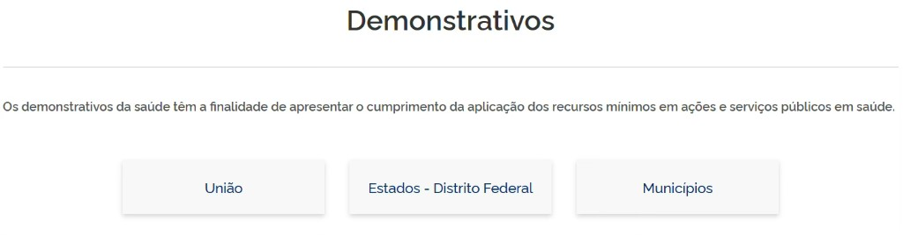
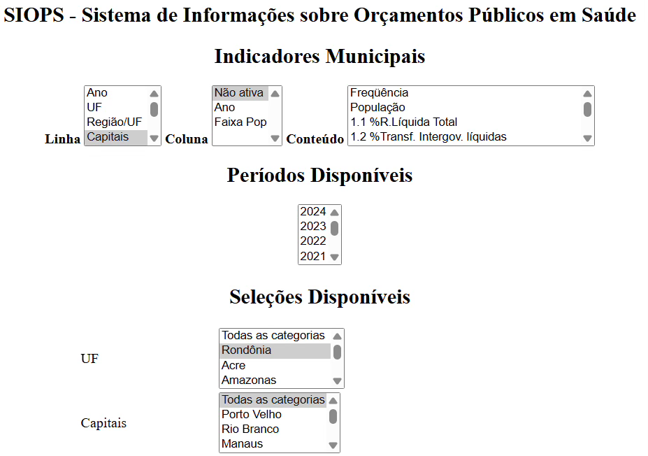

Módulo 3 | Aula 4
Sistemas de Informações de Gestão, Infraestrutura e Orçamento
Sistema de Informações sobre Orçamentos Públicos em Saúde (SIOPS)
O Sistema de Informações sobre Orçamentos Públicos em Saúde (SIOPS) é o sistema oficial do Ministério da Saúde responsável pela coleta, processamento, armazenamento e disseminação de dados sobre as receitas e despesas destinadas às ações e serviços públicos de saúde (ASPS) realizadas por todos os entes federativos, a saber: União, estados, Distrito Federal e municípios. Sua criação está relacionada à necessidade de garantir maior transparência e controle social sobre o financiamento do SUS, bem como monitoramento do cumprimento dos percentuais mínimos de aplicação em saúde previstos na Constituição Federal.
A ideia de um sistema nacional para acompanhamento dos gastos públicos em saúde surgiu no âmbito do Conselho Nacional de Saúde, em 1993, e foi formalmente institucionalizada no Ministério da Saúde em 2000, por meio de portarias interministeriais, consolidando-se como instrumento estratégico para a gestão do SUS.
Desde a publicação da Lei Complementar nº 141/2012, o envio de dados ao SIOPS tornou-se obrigatório para todos os entes federativos, inclusive a União, e passou a ocorrer de forma bimestral.
Você pode conhecer mais sobre o SIOPS aqui.
Coleta de dados
Fluxo de coleta de dados
A base de dados do SIOPS é alimentada pelas informações enviadas pelos estados, Distrito Federal e municípios e, após a Lei Complementar n° 141 de 2012, também pela União. O sistema é alimentado com dados extraídos dos demonstrativos contábeis, seguindo rigorosamente os padrões definidos pela Secretaria do Tesouro Nacional, por meio de software próprio operado por contadores e validado por gestores de saúde, com transmissão segura via internet e certificação digital.
Como os dados do SIOPS têm natureza declaratória, o sistema realiza a compatibilização com os registros contábeis, e os entes que apresentem inconsistências ou que não cumpram o mínimo legal podem sofrer sanções federais, como o bloqueio de transferências.
Dados coletados
Os dados coletados pelo SIOPS concentram-se fundamentalmente na execução orçamentária dos entes federados, com foco específico nas receitas e despesas com ações e serviços públicos de saúde.
O sistema reúne informações estruturadas em grandes grupos:
- Dados de Receitas: o sistema coleta informações detalhadas sobre a arrecadação para monitorar a capacidade de financiamento e a dependência de transferências. Exemplos de indicadores: receitas totais, receitas com arrecadação própria, receitas oriundas de transferências governamentais.
- Dados de Despesas em Saúde: o SIOPS disponibiliza os dados de despesas com diferentes níveis de desagregação, possibilitando a análise da alocação de recursos em saúde. Exemplos de indicadores: Despesa Total em Saúde, Despesas per capita em saúde, Despesa com Pessoal, Investimentos em Saúde, Despesas com Medicamentos, Despesas por Subfunções Administrativas;
- Dentre os indicadores de despesas se destaca o:
- Percentual de recursos próprios aplicados em Ações e Serviços Públicos de Saúde (ASPS). Esse indicador demonstra se a União, estados, Distrito Federal e municípios estão cumprindo o dispositivo constitucional que determina a aplicação mínima de recursos próprios em saúde.
- Dentre os indicadores de despesas se destaca o:
Qualidade e limitações dos dados
Fortalezas
Do ponto de vista técnico e operacional, o SIOPS destaca-se pela alta qualidade da informação, apresentando níveis excelentes de cobertura e completitude de dados quando comparado a outros sistemas fiscais nacionais.
A clareza metodológica é um ponto forte do sistema, que não deixa dúvidas ou ambiguidades quanto ao seu manuseio. Ele oferece indicadores objetivos, gerados automaticamente, que facilitam a prestação de contas.
Limitações
Entre os principais problemas do SIOPS estão navegabilidade complexa, instabilidade do sistema, falhas em links e conteúdos e ausência de interoperabilidade com outros sistemas governamentais.
A literatura também aponta que a qualidade de determinadas informações desagregadas, especialmente aquelas relacionadas à subfunção de Atenção Básica, é inferior ao nível desejável. Esse problema ocorre principalmente em municípios de pequeno porte, devido à falta de pessoal técnico qualificado.
Outro aspecto, destacado por Feliciano et al. (2019), é que a qualidade do preenchimento dos dados do sistema é influenciada pelos ciclos políticos, com aumento da omissão de informações em anos de eleições municipais.
Usos do SIOPS
O Uso do SIOPS como Ferramenta de Gestão e Planejamento
Monitoramento do Financiamento em Saúde
O sistema é a principal ferramenta para garantir o cumprimento da Lei Complementar 141/2012. Ele permite que o gestor acompanhe se o município está atingindo o percentual mínimo de aplicação em Ações e Serviços Públicos de Saúde (ASPS), possibilitando correções de rota antes do fechamento do exercício fiscal para evitar sanções, como a suspensão de transferências voluntárias da União.
Qualificação do gasto e Planejamento Estratégico
Para além de "quanto" se gasta, o SIOPS revela "como" se gasta. Ao analisar a série histórica, por exemplo, o gestor consegue identificar se o orçamento está excessivamente comprometido com despesas correntes (como folha de pagamento) em detrimento de investimentos.
Além disso, o sistema permite realizar estudos comparativos, confrontando os indicadores de despesa per capita e a estrutura de custos do seu município com outros de porte semelhante.
O uso do SIOPS para a Pesquisa
Análise de séries históricas sobre o financiamento
O SIOPS possui um banco de dados consolidado desde o ano 2000, o que é de grande valia para pesquisas longitudinais. Essa série histórica permite analisar a evolução do financiamento do SUS ao longo das décadas, identificar tendências de subfinanciamento e avaliar o impacto de crises econômicas ou de novas legislações (como a Emenda do Teto de Gastos) sobre o comportamento das despesas municipais e estaduais.
Estudos sobre Federalismo Fiscal e desigualdades
O SIOPS pode servir de fonte para a investigação de desigualdades regionais no financiamento da saúde. Além disso, pesquisadores podem utilizar esses dados para analisar a dependência dos municípios pequenos em relação às transferências federais e estaduais, identificando como a capacidade de arrecadação própria influencia a oferta de saúde nos territórios.
Avaliação de eficiência e efetividade (Gasto x Resultados)
Uma das possibilidades de uso mais ricas para a pesquisa é o cruzamento dos dados financeiros do SIOPS com dados epidemiológicos e de produção (do SIH, SIA ou SIM). Isso permite estudos de custo-efetividade que visem responder se o aumento do investimento per capita em um município resulta, de fato, em melhores indicadores de saúde.
O uso do SIOPS para o controle social
O SIOPS é indispensável para o fortalecimento do controle social, pois oferece transparência sobre as receitas e despesas públicas em saúde, permitindo que os conselhos de saúde e demais cidadãos fiscalizem não apenas o cumprimento dos mínimos constitucionais, mas também a qualidade da alocação dos recursos. Ao democratizar o acesso a esses dados, o sistema empodera a sociedade para avaliar se a execução orçamentária reflete as reais prioridades definidas nos Planos de Saúde e na Programação Anual de Saúde (PAS), combatendo desvio de finalidade e qualificando o debate sobre o financiamento do SUS.
Disseminação da informação no SIOPS
A principal forma de disseminação da informação do SIOPS ocorre a partir do seguinte site eletrônico: https://www.gov.br/saude/pt-br/acesso-a-informacao/siops
Acesso aos Demonstrativos Contábeis
Figura 1 – Página de acesso aos demonstrativos do SIOPS por esfera de governo (União, estados/DF e municípios).

A forma mais direta de disseminação é por meio de consulta aos Demonstrativos da Saúde (RREO). Nessa seção pública do sistema, qualquer cidadão ou gestor pode acessar relatórios detalhados bimestrais. Esses relatórios funcionam como uma "fotografia" da gestão, apresentando as receitas arrecadadas e as despesas executadas, classificadas por áreas como Atenção Básica, Vigilância Sanitária ou Assistência Hospitalar.
Obs.: o acesso aos dados é bimestral, no entanto, caso você selecione o 6º bimestre, terá acesso aos dados anuais de receitas e despesas.
Painel de Indicadores
Figura 2 – Tela de seleção de variáveis, período e abrangência geográfica do SIOPS (Indicadores Municipais).

Fonte: http://siops-asp.datasus.gov.br/CGI/deftohtm.exe?SIOPS/serhist/municipio/mIndicadores.def
O SIOPS também dissemina dados a partir do Módulo de Indicadores. Com uma interface semelhante ao Tabnet do DATASUS, essa ferramenta permite cruzar variáveis e criar tabelas personalizadas para analisar a evolução dos gastos ao longo dos anos (séries históricas).